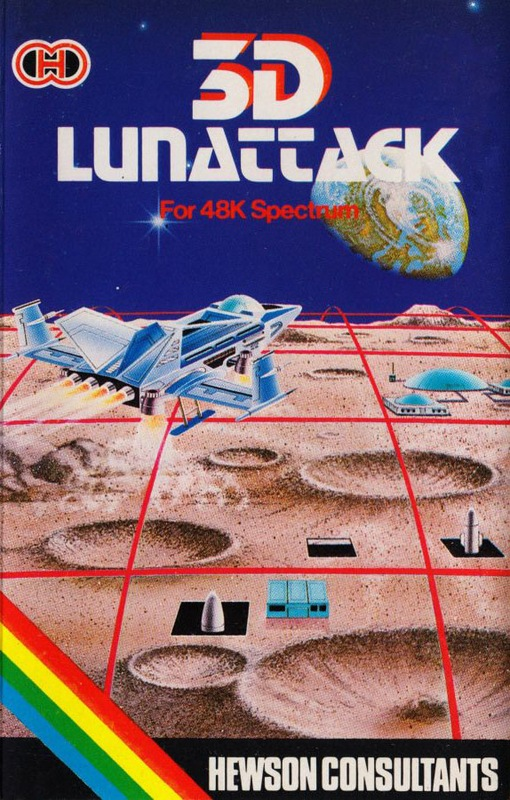
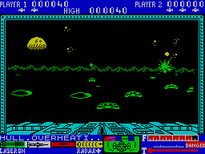

3D Lunattack


{kind=link}

| Publisher: | Hewson Consultants |
| Price: | £7.95 |
| Year: | 1984 |
| Source: | CRASH, Issue 4 |

The latest in Hewson’s attempts to convince an ignorant world that life as we know it will soon cease to exist unless we turn our attention to the threat of the SEIDDAB, is also the best yet. The ideas author Steve Turner started to develop in 3D Space Wars, improved in 3D Seiddab Attack, have now come to full fruition in this latest program (unless he’s got more ideas stuffed up his sleeve).
The game requires you to fly a mission in your Z5 Luna Hover Fighter against the Seiddab command base. This is protected by three rings of defence. The first consists of robotically controlled DAB tanks which fire missiles at your craft and they can be destroyed by laser fire. The second ring is a mountainous area seeded with aerial mines, set to explode in your proximity. These may be shot with your lasers, or dodged around. An exploding mine will rock your craft and deflect its course. The third zone is studded with self activating SEIDDAB missile silos, which may be attacked with your lasers. If you penetrate the command zone, many straffing runs will be required to destroy the base while avoiding its heavy defensive fire power.

towards the Seiddab Command Base..
At any time you may be attacked by Seiddab hover fighters. Your craft is also armed with air-to-air missiles which will destroy the enemy fighters before they come into range, although when they are sighted the lasers must be used. Weapon selection is automatic, below the horizon it’s lasers, above it’s missiles.
The complex screen display is a cockpit view, not unlike that in Seiddab Attack. Out of the cockpit windshield you can see the horizon of mountains, the various details of the enemy craft in solid 3D, the crosswire sight of your weaponry and the illuminated radar display. This switches on automatically an enemy hover fighter is detected. It places a small box near the enemy location and a set of decreasing figures showing range to sighting. At this stage missiles may be fired and forgotten. Below the viewscreen is the instrumentation showing fuel, armament type in use and hull temperature, which increases to a critical point with each enemy strike. A message display informs you of the zone entered and enemy activity. This is also given verbally if you are using the Currah Microspeech unit.
As yours is a hover craft, the left/right keys alter direction but the up/down keys raise and lower the weapon sight.
An additional treat is the recording on tape immediately after loading. To hear this you simply unplug the EAR socket on the recorder and sit back. Alternatively for those with Currah, just turn up the telly volume and listen to the instructions on playing the game as related by the mission commander to ‘you’.
CRITICISM
‘Steve Turner has managed to pack an amazing amount of program and game into this. The display is wonderful, the best three dimensional “Battle Zone” type game yet. It is seen at its best when a missile takes off from the ground silos, and can literally dash past your windscreen, as it turns in its trajectory to head straight at you. Neat touches like the radar warning display “projected” up onto the windshield canopy are marvellous. Also useful is the navigation system. Placing the gun sight at its lowest position prompts a series of short straight lines to appear, which guide you into command base. This is essential when you are on your final straffing runs as several are needed, making you constantly circle the base for another go. Really excellent, most playable and addictive too.’
‘You fight the battle against the Seiddab again, but don’t form any opinion from 3D Seiddab Attack, for this is totally different and utterly amazing! Three dimensional graphics storm towards you at a terrific speed, and it’s all so realistic. Your hover craft handles just like a real fighter would — I think. Skill and accuracy play a major role in this shoot em up game. The Spectrum seems to have been pushed to its limits, although Steve Turner will no doubt have a go at pushing them further still on the next one. Graphics are fast, smooth and detailed, and although colour has been well used, it doesn’t have a major function. No unnecessary instrumentation has been put in, it’s all essential to help you win. It’s highly addictive and I think it will take a long time to get tired of.’
‘All the detail in this game is excellent. As your craft turns the horizon sways to match the banking effect. When your hull overheats, the screen turns blood red, then the nose of your craft dips, and the ground seems to rush up to meet you. The graphics throughout are fast and very smooth, well used 3D effects, especially the ground missiles. Even the half sphere of the Earth can be seen hovering just above the mountainous horizon as you head for the command centre. The cursor keys may not be in the best layout, but surprisingly, they seem to work quite well here, despite the speed of play, possibly because one set operates direction, the other set the sight. The sound is also very well used, and powerful if you have a Currah unit. I could almost swear the ‘you’ on the recording at the start is Sean Connery playing his James Bond role. Marvellous.’
COMMENTS
| Control keys: | Cursors, with 0 to fire |
| Joystick: | Kempston, Datel, ZX 2, Protek, AGF |
| Keyboard play: | Very responsive |
| Use of colour: | Good |
| Graphics: | Excellent, fast, smooth and detailed 3D |
| Sound: | Good |
| Skill levels: | 1 but completing mission results in an increase in difficulty |
| Lives: | 3 |
| Features: | Special sound recording on tape, 1 or 2-player games, Currah Microspeech compatible |
| General rating: | Highly addictive, complex shoot em up. Excellent value and highly recommended. |
| Use of computer: | 80% |
| Graphics: | 92% |
| Playability: | 89% |
| Getting started: | 95% |
| Addictive qualities: | 89% |
| Value for money: | 92% |
| Overall: | 90% |